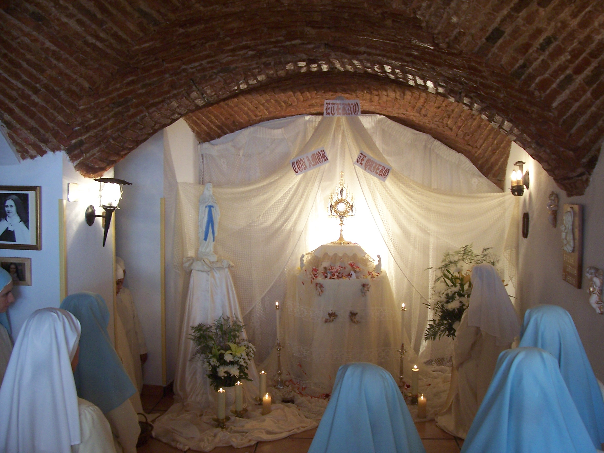

Virgo Fidelis, sé Tú misma nuestra Superiora Inmaculada.
Cuece tu Obra entre las llamas de tu Corazón, a molde DON TOTAL.
Haz de cada una de tus hijas una verdadera Obra de Amor.
El Camino Contemplativo

Oración y Alabanza
Nuestra jornada está marcada por la oración continua y el canto de la Liturgia de las Horas, elevando a Dios los sufrimientos, esperanzas y peticiones del mundo entero.
Saber más
Adoración al Santísimo
El centro de nuestra vocación. Permanecemos postradas ante el Santísimo Sacramento expuesto, adorándole y reparando en nombre de los que le olvidan.
Saber más
El Sagrado Silencio
El silencio monástico no es vacío, sino el espacio necesario para cultivar la conversación íntima con Dios y estar atentas a las inspiraciones del Espíritu Santo.
Saber másGalería del Monasterio